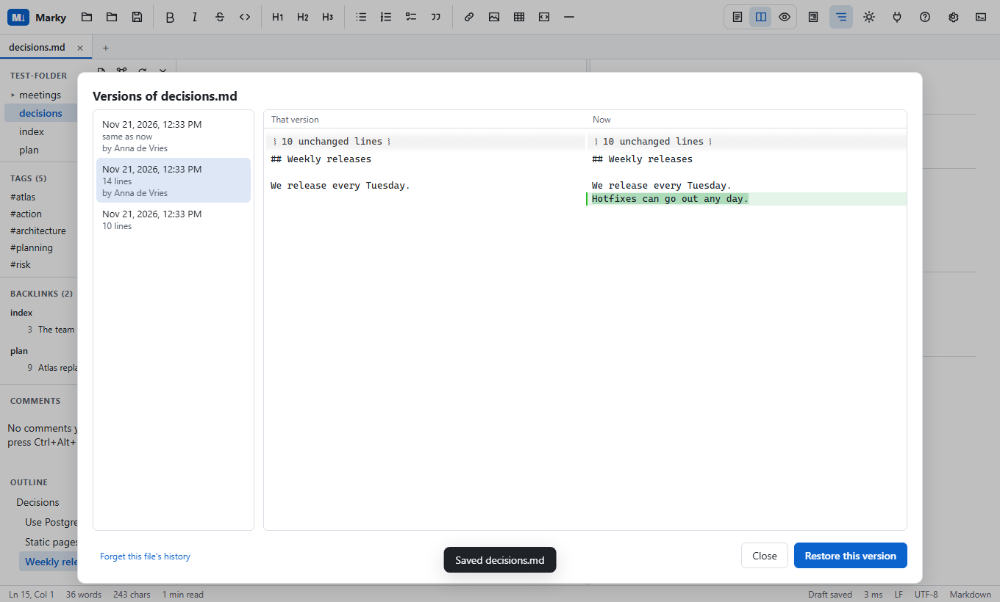
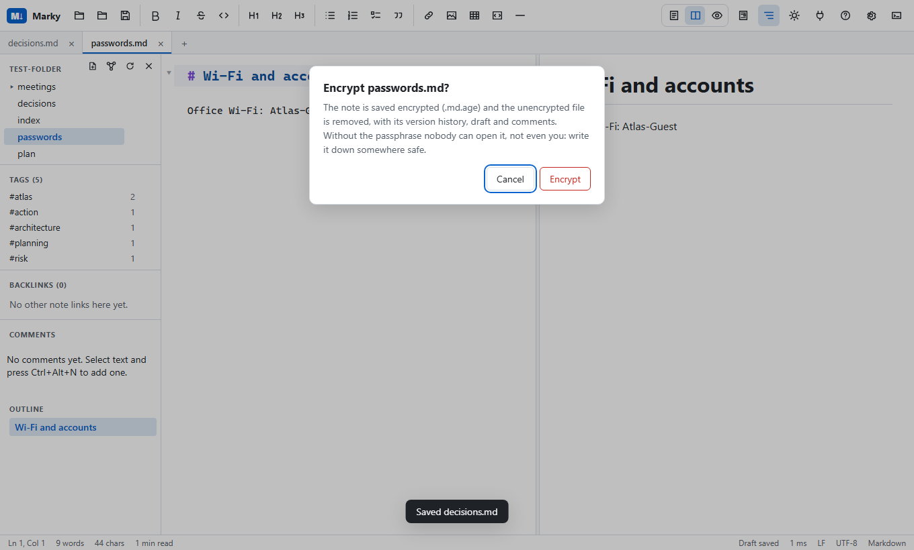
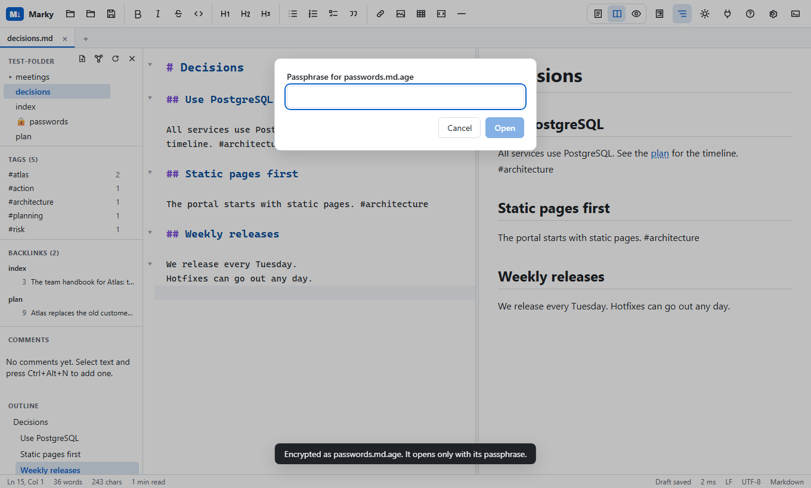

12. Your work is safe
Drafts and recovery
Every open note is saved as a draft in the background within a few seconds of typing, separately from your file. The status bar says Draft saved. After a crash, a power cut or an accidental reload, Marky lists the notes with unsaved work and offers to restore them. Your open tabs and folder come back the next time you start.
Desktop: saving is atomic: the new version is written to a temporary file first and then put in place, so a crash never leaves a half-written file.
Version history
Every time you save, Marky keeps a copy (the last 100 per note, and the note as it was before Marky first changed it). Version history… lists them:

- Each version shows when it was saved, how long it was, and by whom: you, or in a shared note the people who typed since the version before.
- Pick one to compare it side by side with the note now.
- Restore this version puts it back as one change you can undo.
- The copies are kept on this computer only. Forget this file's history removes them.
Encrypted notes
Keep a note readable only with a passphrase: passwords, personal matters, anything confidential.
Encrypting a note
- Open the note (saved, in a folder) and run Encrypt this note (passphrase)….
- Choose a passphrase of at least 10 characters. A few words works well: correct horse battery staple. Marky refuses passphrases that are easy to guess.
- Type it again.
- Confirm. The note is saved as
note.md.age, and the unencryptednote.mdis removed, together with its version history, draft and comments.

Opening an encrypted note
Encrypted notes have a 🔒 in the folder and on their tab. Clicking one asks for the passphrase; a wrong one asks again.

Edit and save as usual: every save is encrypted again with the same passphrase.
What Marky never does with an encrypted note
- No drafts and no version history (they'd be stored unencrypted).
- Not in search, the index, tags, backlinks or the graph.
- No comments (use a `` in the text instead).
- Not sent to AI agents, not readable by plugins, not shared live.
- Not reopened when Marky restarts: open it again with its passphrase.
Taking the encryption off
Remove encryption from this note… saves it as an ordinary note.md again.
The format
age, with scrypt to turn the passphrase into a key and ChaCha20-Poly1305 to encrypt, written as text so it works in Git. The age command-line tool opens the same files: age -d note.md.age > note.md.
Nobody can open the note without the passphrase: not Marky, not its makers, not you. Keep it somewhere safe, like a password manager.